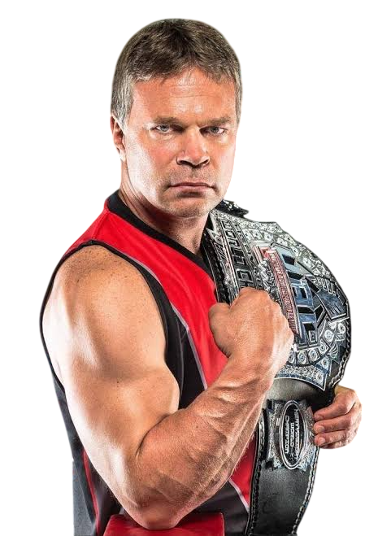
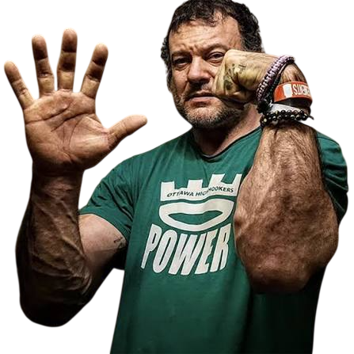
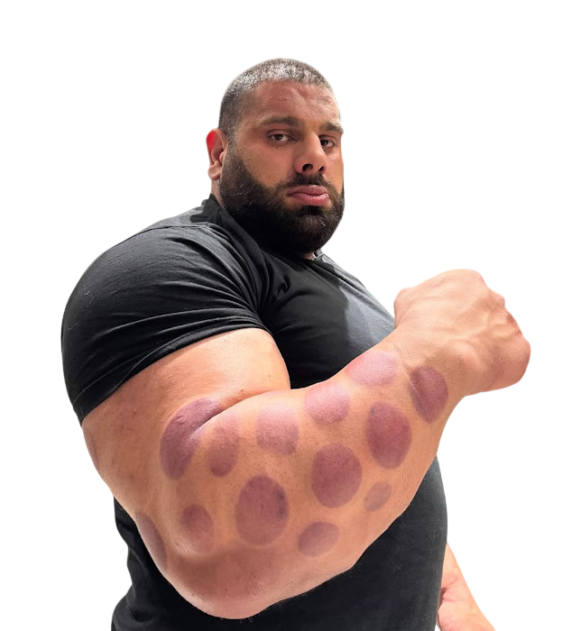
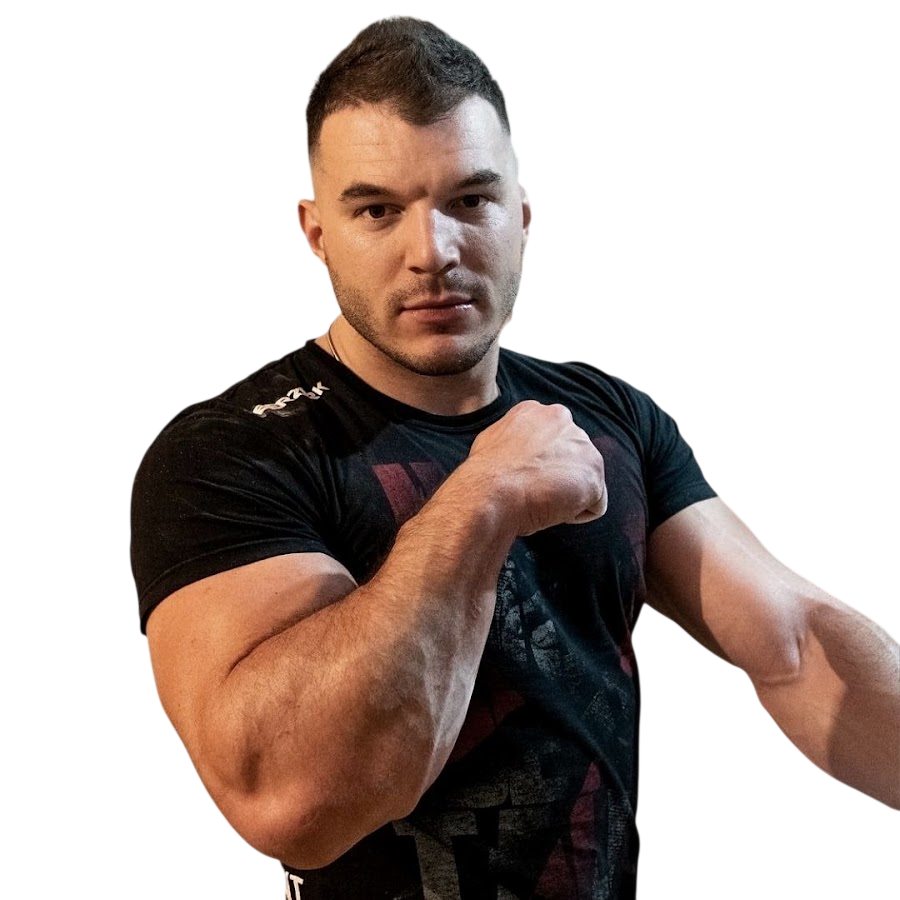
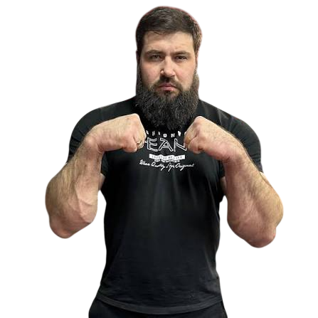
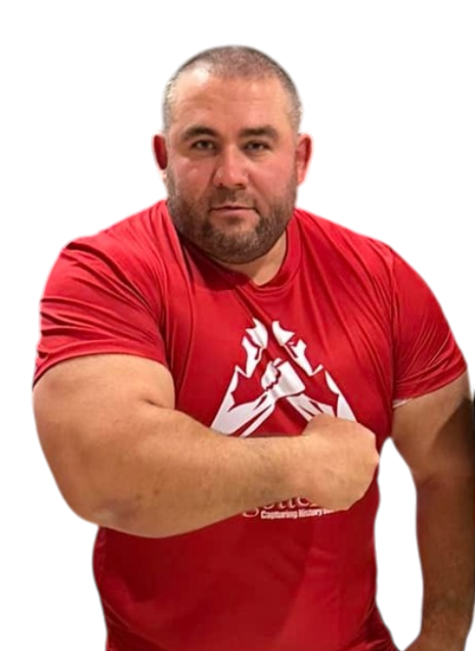
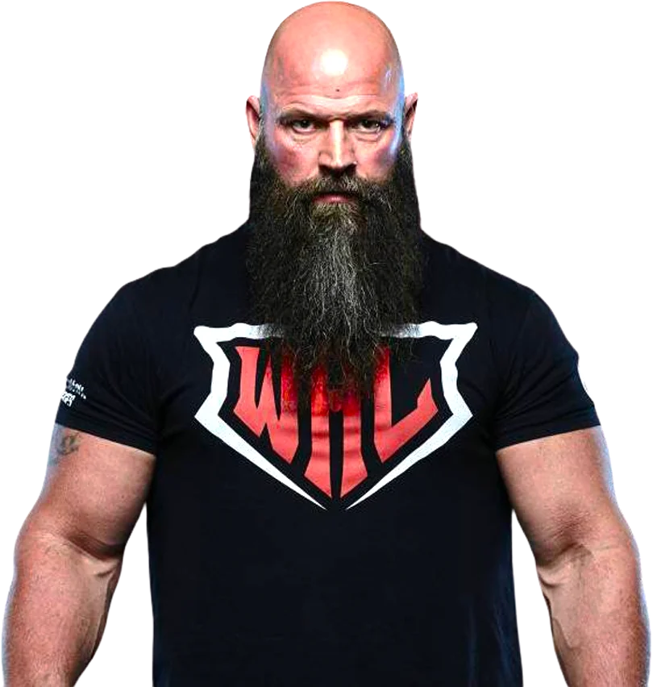
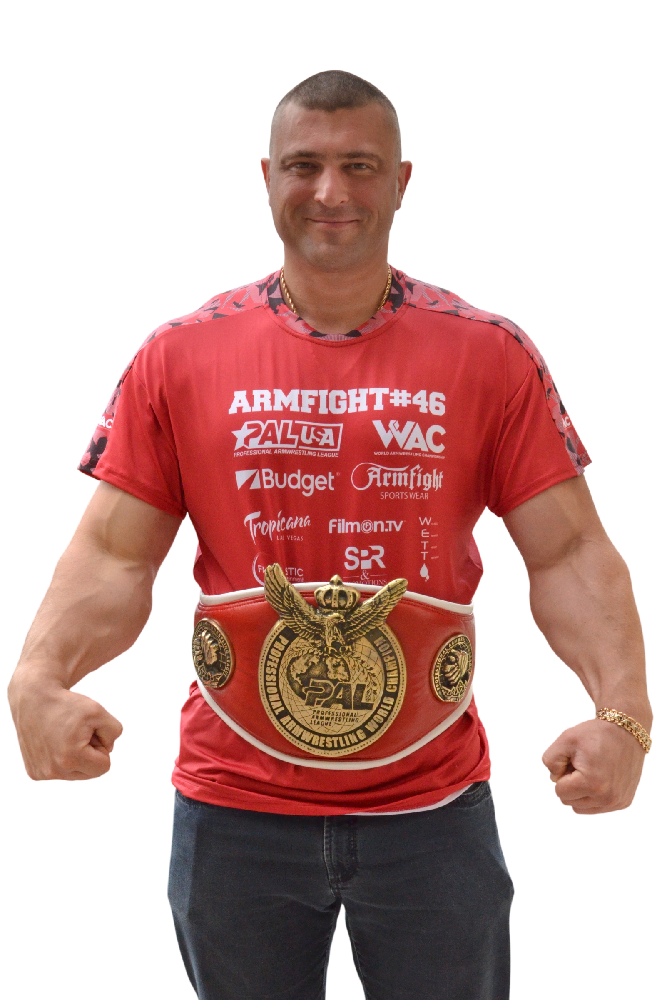

The Live Legends
-

John Brznek
"The Professor"Officially recognized by the Guinness Book of World Records as the "Greatest Armwrestler of All Time." For over 25 years, John remained completely undefeated in his weight class and regularly secured victories against much larger opponents in the super heavyweight division. His unique anatomical understanding of the pull, phenomenal tendon strength, and flawless technique earned him the global nickname "The Professor."
-

Devon Larrat
"No Limits"A former Canadian Special Forces member and one of the most popular and charismatic armwrestlers of the modern era. Devon is world-renowned for his near-limitless endurance at the table, his signature "King's Move" defensive style, and his masterful psychological warfare during the setup. He has captured and defended world champion titles in both heavy and super heavyweight divisions multiple times.
-
.png)
Denis Cyplencov
"The Hulk"The owner of the most massive and powerful hands in the world of professional armwrestling. Denis became a legend thanks to his unique genetics, incredible ligament strength, and world records in the strict biceps curl. He is a multiple-time winner of the prestigious Nemiroff World Cup and has held professional world champion belts for both left and right arms.
-

Levan Saginashvili
"Georgian Hulk"The absolute dominant force in modern world armwrestling. Levan possesses such colossal and devastating raw power that throughout his years of competing at the highest professional level (including East vs West and King of the Table), he hasn't dropped a single round to his opponents. Today, he is widely regarded as the most powerful and unstoppable puller in the history of the sport.
There are other monsters in super heavyweight category!
-

Ermes Gasparini
"The Gladiator"One of the most passionate and technically brilliant armwrestlers of the modern professional era. Hailing from Italy, Ermes shocked the world with his rapid ascension to the top of the super heavyweight division, famously pushing the unbeatable Levan Saginashvili to his absolute limits. Known for his incredible wrist connection, explosive back pressure, and intense warrior mentality at the table, "The Gladiator" represents the absolute pinnacle of European armwrestling excellence
-

Vitaly Laletin
"Siberian Bear"An elite super heavyweight armwrestler and a former Guinness World Record holder for grip strength. Towering at an incredible 2.03 meters (6'8"), Vitaly works as a professional truck driver while dominating elite competitions. He is an absolute master of the top-roll technique. Laletin uses his massive height, long levers, and unstoppable hand control to shut down opponents instantly, making him one of the most dangerous pullers on the planet
-

Georgi Tsvetkov
"The Grizzly"A 165 kg mountain of a man and a multiple-time World Heavyweight Champion. Known as "The Grizzly" due to his massive size, he is world-renowned for his monstrous forearm endurance and dangerous hook game. Georgi regularly battles the strongest super heavyweights on the planet at elite events like East vs West.
-

Michael "Monster" Todd
A legendary American veteran and multiple-time world champion known as "Monster." He is famous for having one of the most indestructible defenses in armwrestling history, utilizing his signature "King's Move." With decades of elite-level experience, Michael remains one of the most resilient and famous pullers in the sport.
-

Andriy Pushkar
"The Railgun"A legendary Ukrainian professional armwrestler and one of the most respected figures in the history of the sport. Standing 1.92 m tall and weighing around 125 kg, Pushkar won the World Armwrestling Championship a record 11 times with both left and right hands. He was world-renowned for his terrifyingly explosive start and brutal side pressure. Tragically, Andrey passed away in a car accident in 2018, leaving behind an unmatched legacy of power, sportsmanship, and dedication.